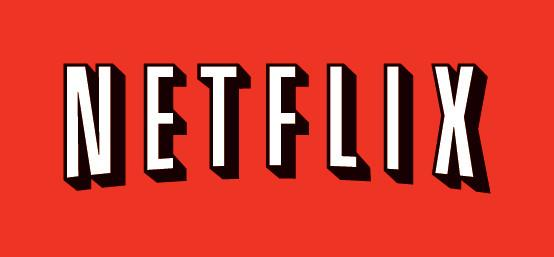
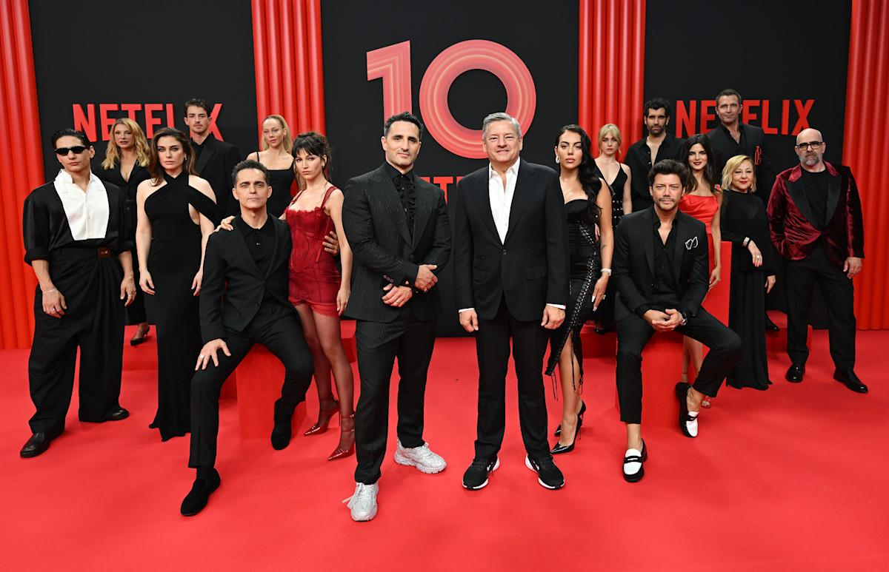
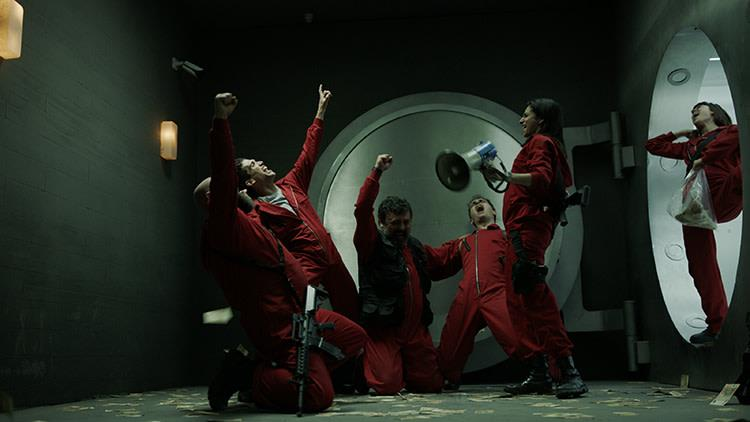
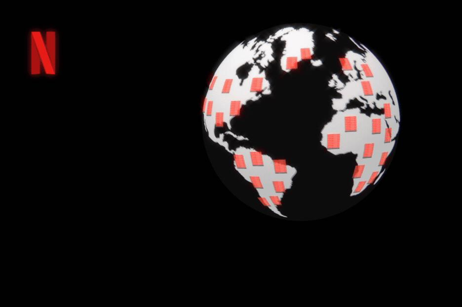
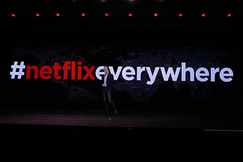
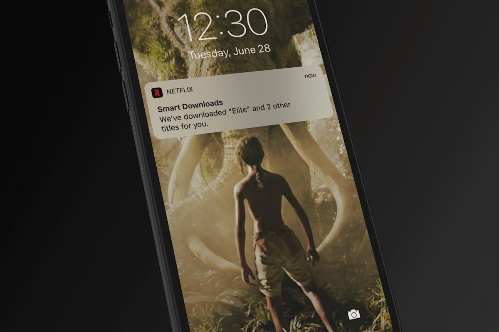
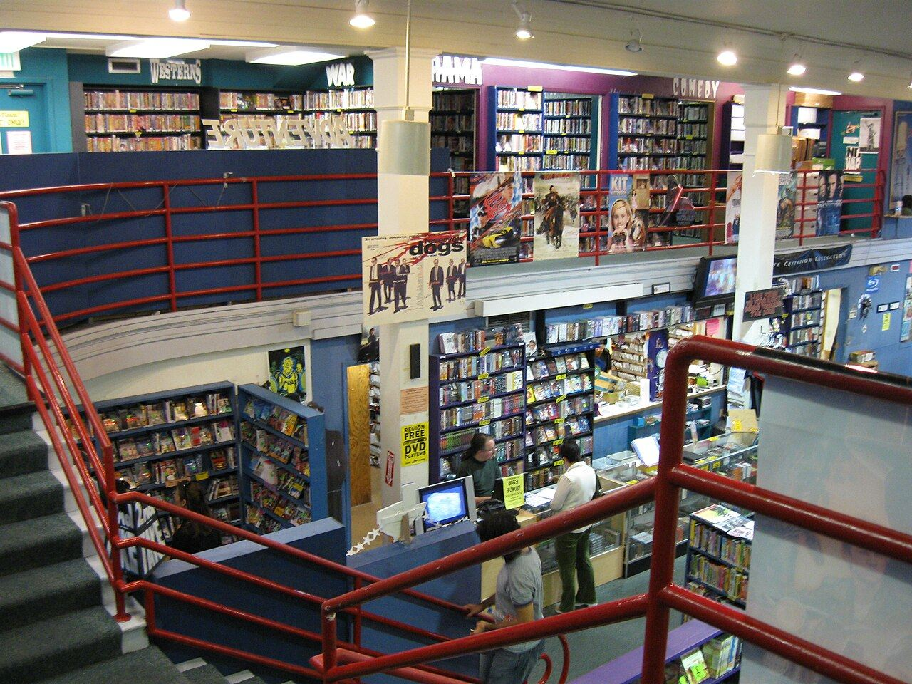
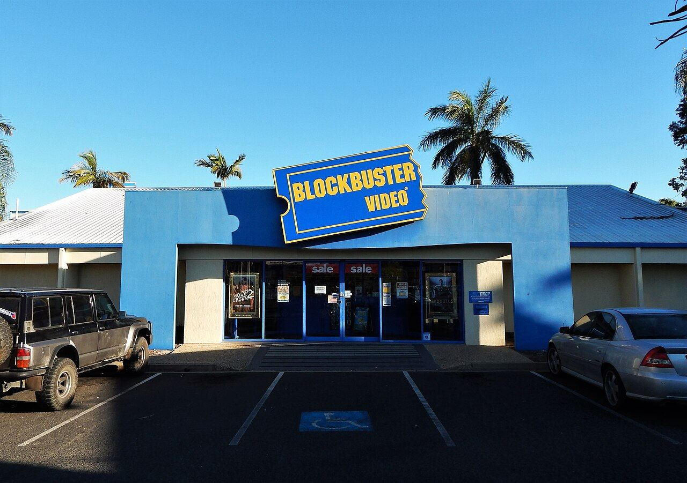

Del correo al instante
Pasó de depender de envíos y días de espera a ver la película al momento.
Recursos y fuentes
Vídeos, galería, fuentes y conclusión.
Canal Felipe Delgado en YouTube (2018). Ver en YouTube
Las figuras 1 a 12 son de la sala de prensa oficial de Netflix; las 13 a 17 son fotos con licencia libre de Wikimedia Commons.














Pasó de depender de envíos y días de espera a ver la película al momento.
Con su propia red de servidores pudo crecer hasta más de 190 países.
La suscripción de 1999 sigue siendo la base; el siguiente paso, eventos en directo y publicidad.